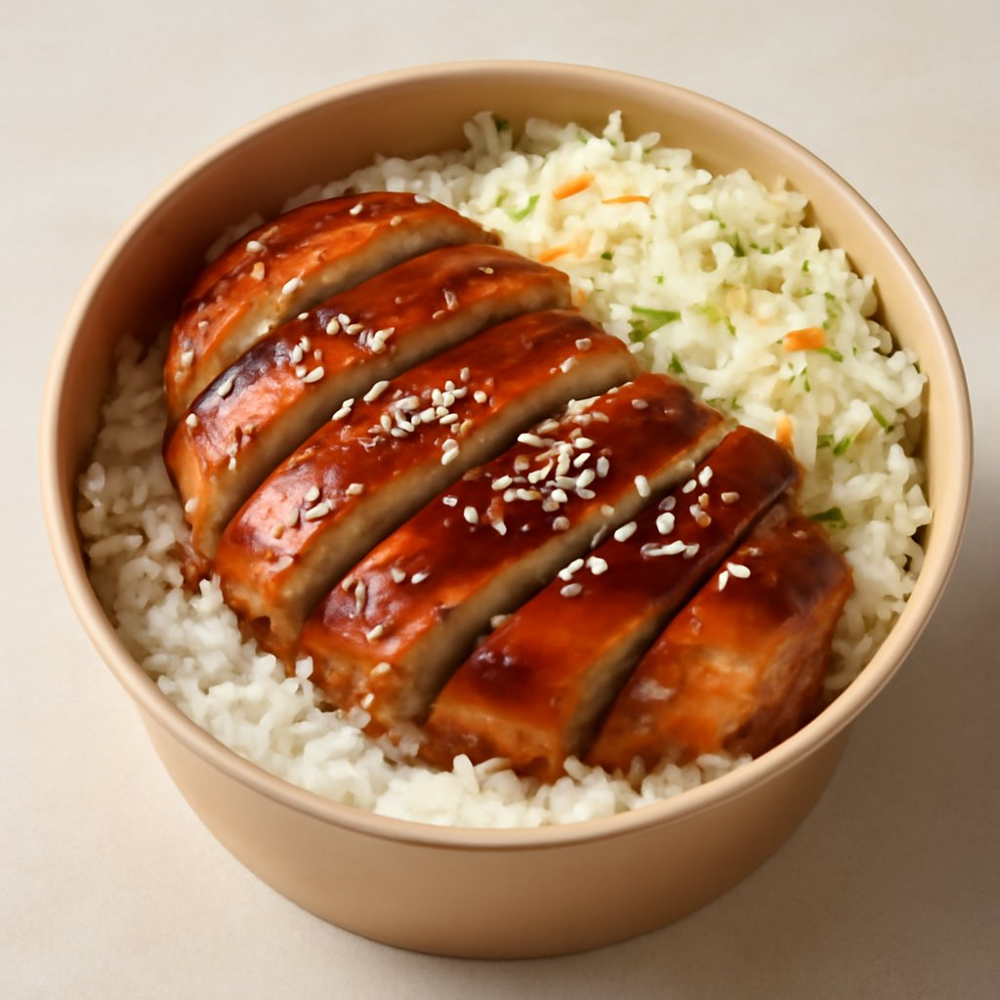
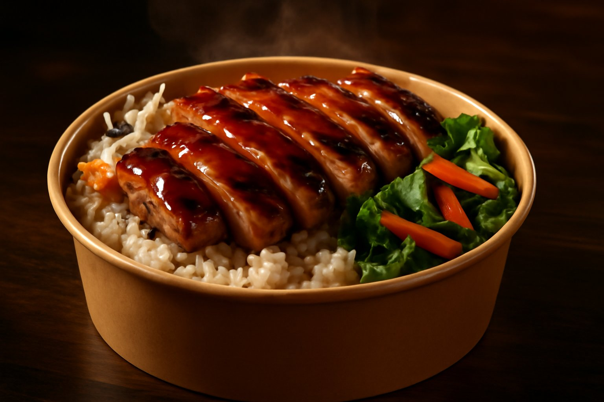

Teriyaki
Chicken Teriyaki
Grilled chicken glazed in our house teriyaki sauce, served over steamed rice with a side of coleslaw. Our most-ordered plate — and for good reason.
From $10
Why Tokyo Teriyaki
Nothing sits under a lamp here. When you order, we cook. That means your chicken is hot, your rice is fresh, and your coleslaw is crisp — every single visit. It's not faster food, it's real food done right.
Most plates come in under $15. But that doesn't mean small portions — our regulars come back because they leave full and satisfied. Great value for a weekday lunch without compromising on quality or taste.
We've been told we remember what our regulars order before they even finish saying hello. That's not an accident — it's the kind of place we want to be. A neighborhood lunch spot where you're treated like family, not a number.
What Guests Say
"Great food, fast service, friendly employees. Highly recommended — nothing more needs to be said."
Google · October 2025
"Great prices, amazing taste. Very simple dish but it hits the spot every time. Very fast service, clean environment."
Yelp · February 2024
"Flavor explosion in your mouth. I got the #9 — beef and chicken teriyaki. Amazing! My wife got the beef teriyaki. We were both blown away."
Yelp · October 2023
Find Us
Last orders taken approx. 15 min before close.
Questions
Contact Us
Catering inquiries, questions, or just want to say hi — we'd love to hear from you.